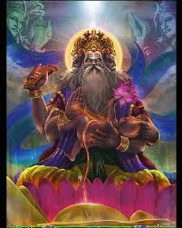

BRAHMA VEDIC GYAN
 Click the icon of Brahma ji and get yourself Blessed
BRAHMA GYAN is derived from Brahma ji because is associated with the formation of differnt universes .Acoording to the upveds and other Holy books of our HINDUSIM the life
span of brahma ji of a particular universe is about of 100 years. How it can be possible ? because from the formation of universe there have been many passed which are
actually more than the age of 100 years .
This is not a miracle it is basically science, Science of Physical matter.